TEMPLATES TUTORIAL
Overview
As a starting point for the Templates tutorial, we'll use a pre-supplied sample project. From the Proteus home page click on the Open Sample button, navigate to the Tutorials category and select Styletut.pdsprj.
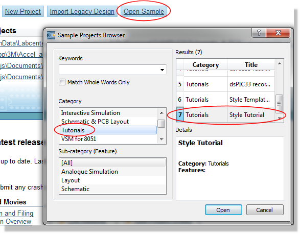
When this loads, you will see that the basic colour scheme in this design is blue outlines with yellow fills for components and red for terminals, etc. and if you zoom in (roll the middle mouse button or use the zoom keys) about some text, you will see that it is all in the Labcenter Electronics ‘vector’ font
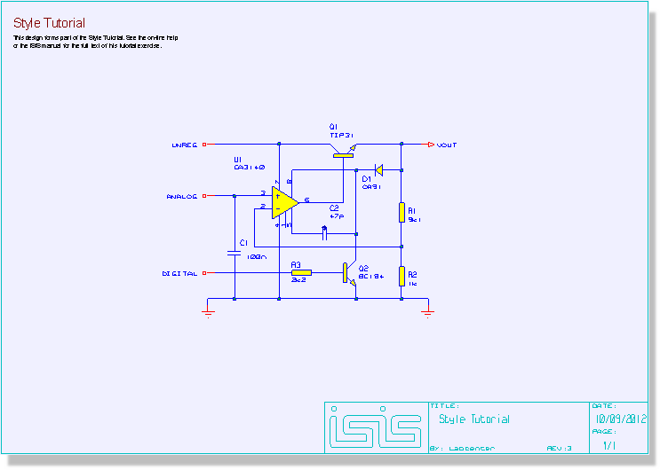
The Tutorial Circuit
Editing Global Styles
We will begin by looking at how to edit the global graphics styles. These styles are, as their name implies, global to the design and editing these styles allows you to make global changes to the appearance of a schematic. Further, when we then save the schematic as a design template these styles will then propagate to all designs initialized from the template.
Let us start by changing the component colour scheme a little. All the components in the design were picked from the standard libraries and as such, the component graphics are all drawn in the COMPONENT style. We can change this style using the Set Graphics Style command on the Template menu. Select this command and you will see the Edit Global Graphics Styles dialogue form displayed as shown below.
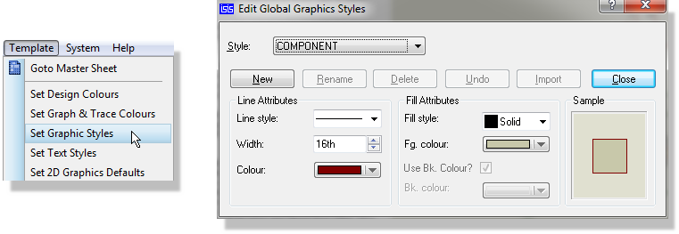
Setting the Component Styles
This form gives access to all the graphics styles defined for the current design - drop the Style selector down to see the full list. As the buttons below the Style list indicate, it is possible to create, edit and delete new styles in addition to the editing the ‘predefined’ styles.
Make sure the COMPONENT style is selected in the Styles list. You will see in the Line Attributes and Fill Attributes sections the attributes for the style. Under Line Attributes select a red colour and then under Fill Attributes select a Fill Style of ‘none’. After both changes you will see that the sample at the right of the dialogue form updates to show a new preview of the style as shown below
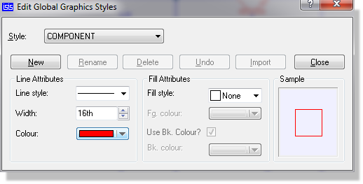
Shows the Component Graphic style edited by the user
Now select the TERMINAL style in the Styles list. The changes you made to the COMPONENT style are automatically saved and the dialogue changes to display the settings of the TERMINAL style. This time, under Line Attributes select a blue colour for lines and then under Fill Attributes select a Fill Style of ‘solid’ which enables the Fg. Colour control where you can select a yellow fill colour.
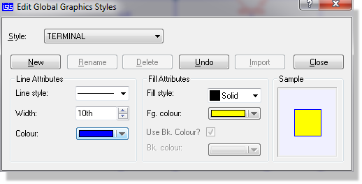
Shows the Terminal Graphic style with user defined coloursj
Close the form using the Close button and the schematic is redrawn to show the changes. The new colour scheme would probably work better on a white background and as you will probably print your designs on white paper, let’s now select white as our ‘paper’ colour. From the Template menu select the Set Design Defaults command. The Edit Design Defaults dialogue form allows you to edit most of the standard colours used by the schematic module including the background or ‘paper’ colour. Change this to a light grey or white as shown below and close the form.
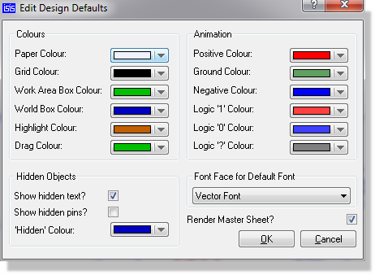
Editing Design defaults
So we’ve seen how to change graphics styles. How about text styles? Changing these is pretty much the same as changing text styles except that style attributes you get to change are different.
However, before we start changing the text styles of individual elements, lets change the text font used in the drawing ‘en mass’. As you’ve already noted, the drawing is currently displaying all its text in the Labcenter Electronics ‘vector’ font. To change the default design font, again select the Set Design Defaults command from the Template menu to display the Edit Design Defaults dialogue form. Under Font Face For ‘Default’
Font you will see Vector Font selected - change this to the standard Windows Times New Roman font face and close the form. The design is redrawn and all text can now be seen to be in Times New Roman.
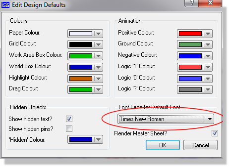
Shows the Edit Design Defaults form with the font changed
Wherever Proteus offers a list of TrueType™ fonts (e.g. as part of editing a text style) there are always two additional font faces listed at the top of the list. These are Default Font and Vector Font. The Default Font option is a place holder for whatever font is selected on the Edit Design Defaults dialogue form whilst the Vector Font option selects the internal Labcenter Electronics Vector Font. In the case of STYLETUT all the text and labels in the design has been placed and/or edited to use the Default Font face which means that it all displays in the font set on the Edit Design Defaults form - select a new font face there and all the text in the design is changed immediately!
The main use of the Vector Font is where you need to both produce hard copy output on a pen plotter. Windows does not properly support the use of TrueType fonts on plotters, and the Labcenter Plotter Driver will output all text in the Vector Font whatever it is defined as on the drawing. The Vector Font has the additional advantage that it is guaranteed to come out exactly the same size on all hard copy devices as it does on the screen. This is not always the case with TrueType fonts.
On the other hand, if you only need to use bitmap devices (i.e. printers) these issues do not arise and you can use all your TrueType™ fonts as you see fit. It has to be said that schematics which use more than two font faces are likely to look very odd!
Having changed our designs ‘default font’ to be Times New Roman lets make some object specific text style changes. From the Template menu, select the Set Text Styles command to display the Edit Global Text Styles dialogue form. Notice how similar this dialogue form is to the Edit Global Graphics Styles dialogue form you saw earlier - as we said, editing text styles is very similar to editing graphics styles.
By default, COMPONENT ID should be the Style selected for editing and you will see that the Font Face is set to Default Font which is, as we explained, the placeholder for the font selected on the Edit Design Defaults dialogue form, currently Times New Roman. Because of this, some fields on the dialogue form that aren’t appropriate to a TrueType™ font, such as character width, are greyed out. Change the Font Face to be Courier New and select Bold? under the Effects options.
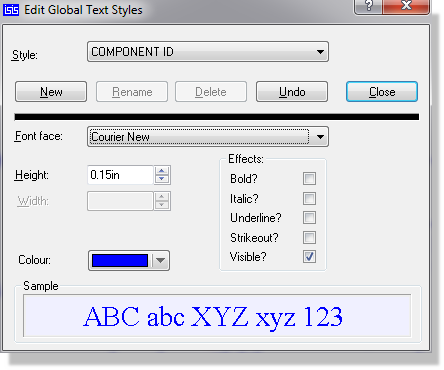
Editing the Component ID Global Text styles to the users choice
Now select the PIN NUMBER style in the Style list (the changes to the COMPONENT style are automatically saved) and then uncheck the Visible? checkbox under the Effects options. Use the Close button to close the dialogue form.
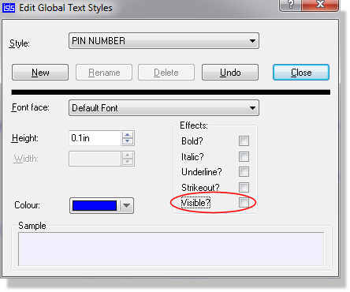
Shows the option to hide the text
Editing Local Styles
So far we have only changed ‘global’ styles. Changing these has had an effect right across the schematic. We will now look at making changes to ‘local’ styles by editing the op-amp’s U1 component reference label.
Note that changes to the local style are not propogated into the design template. They are intended for customizing individual schematics only. If you want to a style change to be permanent you should apply it as a global style change as detailed above.
Lets start by taking a look at a local style: click left on the U1 label to tag it (and the op-amp) and then click right and choose the Edit Label from the menu. The Edit Component ID dialogue form to be displayed.
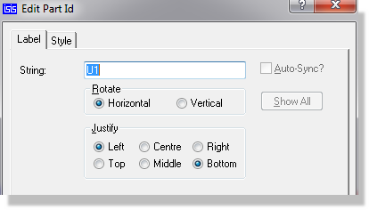
Edit Component Value dialogue
Finally, select the Style tab to see the ‘local’ style settings. You will see the following: a Global Style selector at the top, a set of style attributes (Font face, Width, etc.) to the left and for each attribute a Follow Global? check box to the right. Both text and graphics local styles have this format. Wherever a Follow Global? checkbox is checked, the associated style attribute is initialized from the global style indicated in the Global Style selector. Unchecking the Follow Global? checkbox enables the dialogue control for the associated style attribute allowing you to specify a local (object-specific) value for that attribute. Not all the Follow Global? checkboxes are enabled as, in this case, the Width attribute is meaningless for a TrueType™ font face.
The change we are going to make is to make the U1 label a different colour. Start by unchecking the Follow Global? checkbox to the right of the Colour control and you will see the Colour control is enabled and displaying the current colour set in the whatever global style this local style is following (in this case, the COMPONENT ID style). Change the colour to be dark blue, then close the form and untag the op-amp so that it is redrawn in its normal colours. The U1 label is now dark blue.
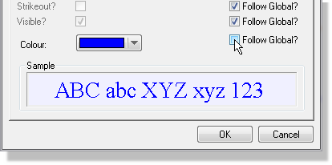
Setting Component Value style
To verify that the label’s colour is indeed now independent of the global style but that the remainder of the attributes are still following its global style, select the Set Text Styles command on the Template menu again, change the colour of the COMPONENT ID style (selected by default) to magenta, check (enable) the Italic option and then close the form. The op-amp’s component label remains dark blue as its colour is not longer following the global COMPONENT ID style however its Italic attribute is still following the global style, so it is now italicised. All the other components’ IDs, which have remained following the global COMPONENT ID style, have both changed colour and become italicised.
For completeness, we will now show you how to edit a local graphics style. Select the Box icon. Now make sure the COMPONENT style is selected and then, placing the mouse at the top left of the circuit, click left and drag out a box that surrounds (and covers!) the circuit diagram. We now need to change the local style of the box to be transparent. Choose the Selection Icon and click left on the outline of the box to highlight the box then right click on the outline and select the Edit Properties from the menu - the Edit Box’s Graphic Style dialogue form is displayed. Apart from the different style attributes, notice how this form is similar to that of the Edit Terminal Label dialogue form’s Style tab. The operation of this form is the same as the operation of that form. Uncheck the Follow Global? checkbox for the Fill Style control and then, it now being enabled, change the fill style to ‘none’. Under Line Attributes, uncheck the colour checkbox and choose a colour of your choice (we have chosen blue). Close the form with the This Graphic Only button and untag the box.
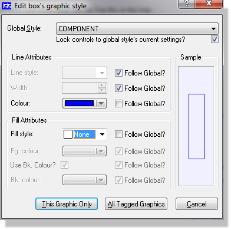
Shows the Edit Box Graphic Styles dialogue
This is a simple example of the power of local and global styles though in general use you will never need to modify a local style. The main use of local styles is with 2D graphics objects (lines, boxes, etc.) when creating a new library part and even then it is recommended that you avoid setting up local styles unless absolutely necessary. As you have seen, once an object has a local setting its appearance is fixed unless it is re-edited and, when applied to new library parts, this means that some or all of a library part will not blend in to the drawing in which it is used. In proper use, this is usually the intention - for example, that the base of a transistor always have a solid fill regardless of the fill selected in the global COMPONENT graphics style. However, when misused, it can lead to library parts that simply don’t port between different colour schemes or users.
Editing the Master Sheet
Having now covered configuration of graphics styles we need to look at design configuration. The first thing we need to do is navigate to the master sheet from the Template menu as shown below

Template Menu - Goto Master Sheet Command
Think of the master sheet as a way to initialise the contents of all sheets with specific graphics. The contents of the master sheet are drawn on every sheet on the design, but are only editable when the master sheet is selected. Further, only graphics and scripts can be placed on the master sheet. This concept allows us, for example, to set up a header block and configure the sheet outline and size for all the sheets on the design in a single place.
More information on the Master Sheet can be found here.
You should see all the graphical objects on the design without any of the components, wiring etc. as shown below.
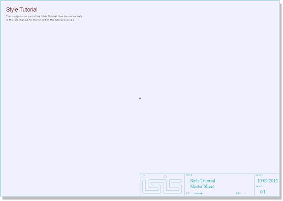
View of the Master sheet.
Any changes you make to the graphics on this sheet will appear in all the sheets of the schematic. Further, they will be saved into the design template and will therefore appear in all designs initialized from the template. This means that you can set up your sheet size, header information, company logo etc. on a master sheet, save the schematic as a design template, and then reuse the template in all your future designs.
We will now use the master sheet to change the appearance of the design. Start by selecting the Set Sheet Size command from the System Menu and changing the sheet size to be A3.
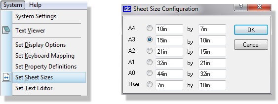
Set Sheet Sizes dialogue with A3 selected
You will be prompted at this point to make all of the sheets on the design the same size as the master sheet. Since we are enlarging the sheet size select the OK button to close the dialogue resize the sheet.
If you make the sheet size smaller and you are working on a schematic you could end up with parts on an existing sheet outside of the work area. Caution is therefore required when adjusting the sheet size on the master sheet during design development.
One consequence of enlarging the sheet size is of course that the sheet border is now the wrong size. To enlarge this simply right click on the box graphic and drag the handles until the box is aligned with the edges of the world area.
Now drag a box around the header block and move the block back into position at the bottom of the sheet as shown below.
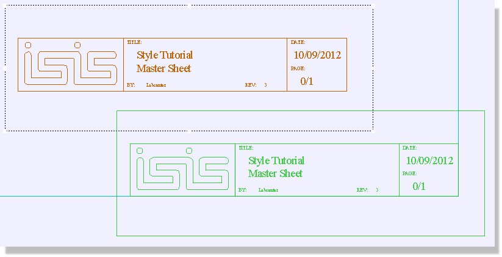
Moving the tagged header block into position
More information on customising the header block can be found here.
Finally, do the same with the script block moving the text and graphics to an appropriate place on the sheet. You can of course change the text, font and colour of the script as detailed in the styles section above.
A common enhancement to the Master sheet is the inclusion of a company logo. You can import a logo in PNG, GIF, JPG, BMP formats from the Import Image command on the File Menu.
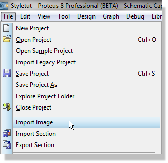
As with the other elements of the Master Sheet you will want to position carefully to avoid clashing with the actual electronic design on normal schematic sheets.
We will now go back to the root sheet of the design proper. To do this, navigate back to the root sheet from the design menu as shown below.
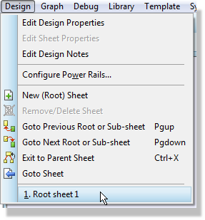
Selecting the Root sheet to return to the main design
Detailed information on using the Design Explorer can be found here.
You can provide names for sheets on the schematic via the Edit Sheet Properties command on the Design menu. Naming a sheet makes it recognizable and easy to navigate to from the Goto sheet command, particularly for hierarchical schematics.
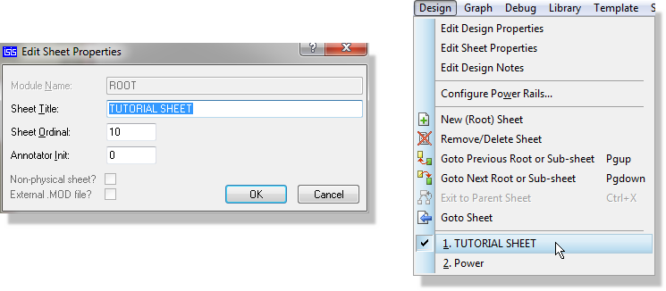
You should now see that all the changes made in the master sheet are visible on the root sheet of the schematic and that the components and wiring form but a small area of the sheet. Obviously this is a little contrived and for a real design of this size you would almost certainly stay with an A4 template but it should give you some appreciation of the customization options available to you.
Saving the Design Template
Having now covered both graphical and design customization all that remains is to make our schematic into a design template. To do this go-to the Save as Design Template on the Template Menu, naming the template file appropriately (for example as tutorial) and make sure you check the box to save only the master sheet.
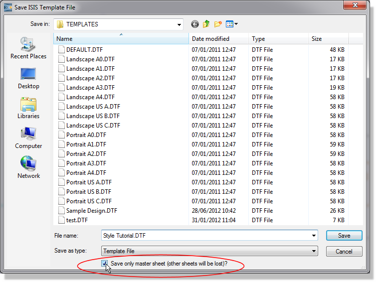
The Save Design as Template dialogue
Clearly in this case we do not want the components, wiring etc. to be saved in the template. You can save components and circuitry as a template but we do not recommend this because if any of the components change in the libraries they will not be updated when you initialize a schematic from the template.
Design Templates must be saved in your Templates directory as specified by the Set Paths command on the System menu. If you need to have more than one templates path (for example, for user templates and company templates) then you can simply add another path via the same command.
When you start up Proteus or start projects directly via the schematic icon the default template is loaded. At the time of shipping this is our own ‘house style’ but you can make this own template by saving your template with the name ‘default’.
Using a Design Template in a Project
The final thing we want to do is start a new project based on our template to ensure that all our changes have taken effect.
To use a design template in a project
- Select the New Project Wizard from the File Menu or Proteus homepage.
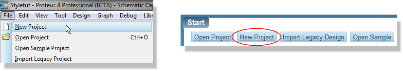
- On the schematic tab you will see a list of available templates will be displayed and become enabled when you specify that your project contains a schematic. This list corresponds to all the template files located in the Templates directory as specified from the Set Paths command on the System Menu. Select the template you wish to use for the project; when the project opens you should find that all of your styles are in use and that Master Sheet config is as specified in this tutorial.
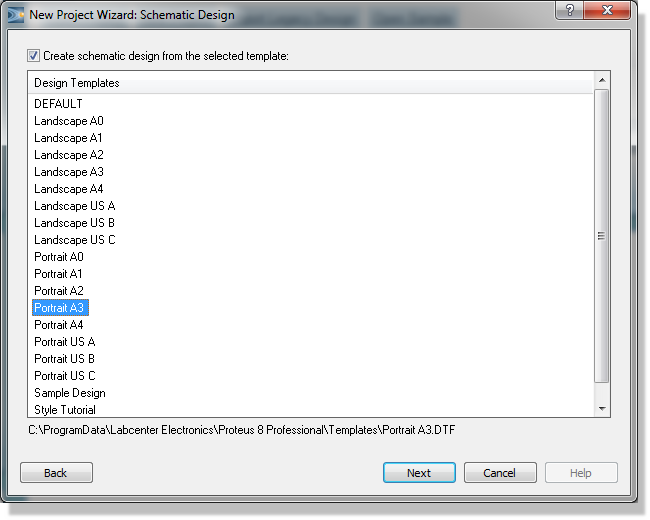
The New Design dialogue